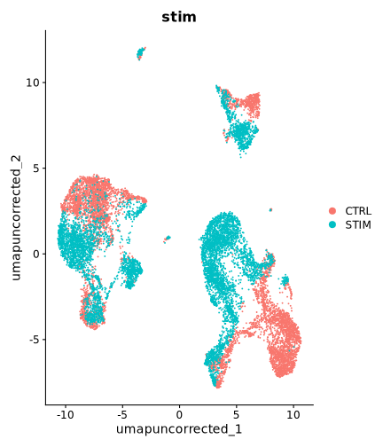
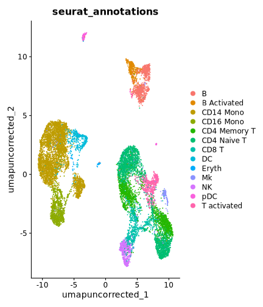
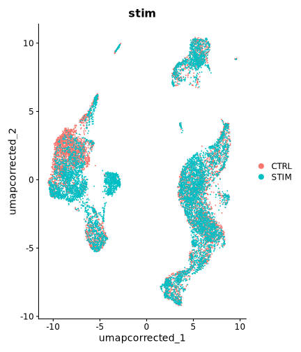
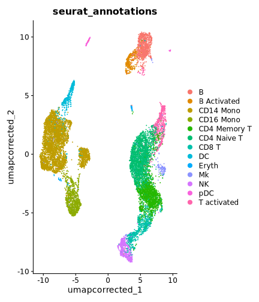

vignettes/articles/SCTransform.Rmd
SCTransform.RmdSCTransform is normally fit separately per
batch before merging — that’s Seurat’s own recommended way to run
it ahead of integration. That means each batch’s residuals live on a
different, non-comparable scale. RunCanek()’s default
correctEmbeddings = TRUE corrects in PCA-embedding space,
and by default reuses whatever "pca" reduction already
exists on the object instead of computing its own (see Correct log-normalized Seurat data for that
default path). For SCTransform-normalized data specifically, we should
reconcile the per-batch normalizations so that the batch-to-batch scale
mismatch is accounted for in the correction. This vignette shows the
reconciliation Seurat itself provides for exactly this problem, and how
RunCanek() uses it — using the same ifnb
dataset as Seurat’s
own integration tutorial and the main Seurat
vignette here.
ifnb is loaded from the SeuratData package
rather than CRAN, so it needs a one-time install the first time you use
it:
if (!requireNamespace("SeuratData", quietly = TRUE)) {
install.packages("remotes")
remotes::install_github("satijalab/seurat-data")
}
SeuratData::InstallData("ifnb")
library(Canek)
library(Seurat)
#> Loading required package: SeuratObject
#> Loading required package: sp
#>
#> Attaching package: 'SeuratObject'
#> The following objects are masked from 'package:base':
#>
#> intersect, t
library(SeuratData)
#> ── Installed datasets ──────────────────────────────── SeuratData v0.2.2.9002 ──
#> ✔ ifnb 3.1.0 ✔ panc8 3.0.2
#> ────────────────────────────────────── Key ─────────────────────────────────────
#> ✔ Dataset loaded successfully
#> ❯ Dataset built with a newer version of Seurat than installed
#> ❓ Unknown version of Seurat installedWe split ifnb by stim into separate
per-batch objects and normalize each one independently with
SCTransform — mirroring how you’d normally run it ahead of
integration.
ifnb <- LoadData("ifnb")
#> Validating object structure
#> Updating object slots
#> Ensuring keys are in the proper structure
#> Warning: Assay RNA changing from Assay to Assay
#> Ensuring keys are in the proper structure
#> Ensuring feature names don't have underscores or pipes
#> Updating slots in RNA
#> Validating object structure for Assay 'RNA'
#> Object representation is consistent with the most current Seurat version
#> Warning: Assay RNA changing from Assay to Assay5
x <- SplitObject(ifnb, split.by = "stim")
x <- suppressWarnings(lapply(x, SCTransform, verbose = FALSE))
#> `vst.flavor` is set to 'v2' but could not find glmGamPoi installed.
#> Please install the glmGamPoi package for much faster estimation.
#> --------------------------------------------
#> install.packages('BiocManager')
#> BiocManager::install('glmGamPoi')
#> --------------------------------------------
#> Falling back to native (slower) implementation.
#> `vst.flavor` is set to 'v2' but could not find glmGamPoi installed.
#> Please install the glmGamPoi package for much faster estimation.
#> --------------------------------------------
#> install.packages('BiocManager')
#> BiocManager::install('glmGamPoi')
#> --------------------------------------------
#> Falling back to native (slower) implementation.If we just merge the independently-normalized batches and call
RunCanek() without computing a joint PCA on reconciled data
first, it stops with an error:
naive <- merge(x[[1]], x[[2]])
DefaultAssay(naive) <- "SCT"
RunCanek(naive, "stim")
#> Error:
#> ! No existing 'pca' reduction found, but assay 'SCT' is SCTransform-normalized. Canek can't safely compute its own PCA from SCTransform residuals fit per batch,
#> since they are on different scales (see SCTransform documentation).
#> To implement Canek, first reconcile the normalized data and compute a joint PCA first, e.g.:
#> features <- SelectIntegrationFeatures(object.list, nfeatures = 3000)
#> object.list <- PrepSCTIntegration(object.list, anchor.features = features)
#> x <- merge(object.list[[1]], object.list[[2]], ...)
#> x <- RunPCA(x)
#> then call RunCanek() again.RunCanek()‘s error points at the fix: select integration
features across the independent models, reconcile the batches’ residuals
onto a comparable scale for those features
(PrepSCTIntegration), merge, and compute a joint PCA on the
reconciled data.
features <- SelectIntegrationFeatures(x, nfeatures = 3000)
x <- suppressWarnings(PrepSCTIntegration(x, anchor.features = features))
x <- merge(x[[1]], x[[2]])
DefaultAssay(x) <- "SCT"
VariableFeatures(x) <- features
x <- RunPCA(x, verbose = FALSE)
x <- RunUMAP(x, reduction = "pca", dims = 1:ncol(Embeddings(x, "pca")),
reduction.name = "umap_uncorrected", verbose = FALSE)
#> Warning: The default method for RunUMAP has changed from calling Python UMAP via reticulate to the R-native UWOT using the cosine metric
#> To use Python UMAP via reticulate, set umap.method to 'umap-learn' and metric to 'correlation'
#> This message will be shown once per session
DimPlot(x, reduction = "umap_uncorrected", group.by = "stim")
plot of chunk unnamed-chunk-6
DimPlot(x, reduction = "umap_uncorrected", group.by = "seurat_annotations")
plot of chunk unnamed-chunk-6
With a "pca" reduction now present on properly
reconciled data, RunCanek() reuses it directly instead of
recomputing one — the SCT assay is auto-detected, so we don’t need to
pass assay = "SCT" explicitly.
x <- RunCanek(x, "stim")
Reductions(x)
#> [1] "pca" "umap_uncorrected" "canek"
ncol(Embeddings(x, "canek"))
#> [1] 50As with the log-normalized workflow, downstream steps should use the
"canek" reduction directly rather than re-running
ScaleData/RunPCA on the SCT assay.
x <- RunUMAP(x, reduction = "canek", dims = 1:ncol(Embeddings(x, "canek")),
reduction.name = "umap_corrected", verbose = FALSE)
DimPlot(x, reduction = "umap_corrected", group.by = "stim")
plot of chunk unnamed-chunk-8
DimPlot(x, reduction = "umap_corrected", group.by = "seurat_annotations")
plot of chunk unnamed-chunk-8
sessionInfo()
#> R version 4.4.3 (2025-02-28)
#> Platform: x86_64-conda-linux-gnu
#> Running under: Ubuntu 22.04.2 LTS
#>
#> Matrix products: default
#> BLAS/LAPACK: /home/mloza/miniconda3/envs/canek-check/lib/libopenblasp-r0.3.33.so; LAPACK version 3.12.0
#>
#> locale:
#> [1] LC_CTYPE=C.UTF-8 LC_NUMERIC=C LC_TIME=C.UTF-8
#> [4] LC_COLLATE=C.UTF-8 LC_MONETARY=C.UTF-8 LC_MESSAGES=C.UTF-8
#> [7] LC_PAPER=C.UTF-8 LC_NAME=C LC_ADDRESS=C
#> [10] LC_TELEPHONE=C LC_MEASUREMENT=C.UTF-8 LC_IDENTIFICATION=C
#>
#> time zone: Asia/Tokyo
#> tzcode source: system (glibc)
#>
#> attached base packages:
#> [1] stats graphics grDevices utils datasets methods base
#>
#> other attached packages:
#> [1] future_1.70.0 panc8.SeuratData_3.0.2 ifnb.SeuratData_3.1.0
#> [4] SeuratData_0.2.2.9002 Seurat_5.5.1 SeuratObject_5.4.0
#> [7] sp_2.2-1 Canek_0.3.1
#>
#> loaded via a namespace (and not attached):
#> [1] RColorBrewer_1.1-3 jsonlite_2.0.0 magrittr_2.0.5
#> [4] spatstat.utils_3.2-4 modeltools_0.2-24 farver_2.1.2
#> [7] vctrs_0.7.3 ROCR_1.0-12 spatstat.explore_3.8-0
#> [10] htmltools_0.5.9 BiocNeighbors_2.0.0 sctransform_0.4.3
#> [13] parallelly_1.48.0 KernSmooth_2.23-26 htmlwidgets_1.6.4
#> [16] ica_1.0-3 plyr_1.8.9 plotly_4.12.0
#> [19] zoo_1.8-15 igraph_2.3.3 mime_0.13
#> [22] lifecycle_1.0.5 pkgconfig_2.0.3 Matrix_1.7-5
#> [25] R6_2.6.1 fastmap_1.2.0 fitdistrplus_1.2-6
#> [28] shiny_1.14.0 digest_0.6.39 patchwork_1.3.2
#> [31] S4Vectors_0.44.0 numbers_0.9-2 tensor_1.5.1
#> [34] RSpectra_0.16-2 irlba_2.3.7 labeling_0.4.3
#> [37] progressr_1.0.0 spatstat.sparse_3.2-0 httr_1.4.8
#> [40] polyclip_1.10-7 abind_1.4-8 compiler_4.4.3
#> [43] withr_3.0.3 S7_0.2.2 BiocParallel_1.40.0
#> [46] fastDummies_1.7.6 MASS_7.3-66 rappdirs_0.3.4
#> [49] bluster_1.16.0 tools_4.4.3 lmtest_0.9-40
#> [52] otel_0.2.0 prabclus_2.3-5 httpuv_1.6.17
#> [55] future.apply_1.20.2 nnet_7.3-20 goftest_1.2-3
#> [58] glue_1.8.1 nlme_3.1-169 promises_1.5.0
#> [61] grid_4.4.3 Rtsne_0.17 cluster_2.1.8.2
#> [64] reshape2_1.4.5 generics_0.1.4 gtable_0.3.6
#> [67] spatstat.data_3.1-9 class_7.3-23 tidyr_1.3.2
#> [70] data.table_1.18.4 flexmix_2.3-20 BiocGenerics_0.52.0
#> [73] spatstat.geom_3.8-1 RcppAnnoy_0.0.23 ggrepel_0.9.8
#> [76] RANN_2.6.2 pillar_1.11.1 stringr_1.6.0
#> [79] spam_2.11-4 RcppHNSW_0.7.0 later_1.4.8
#> [82] robustbase_0.99-7 splines_4.4.3 dplyr_1.2.1
#> [85] lattice_0.22-9 survival_3.8-9 FNN_1.1.4.1
#> [88] deldir_2.0-4 tidyselect_1.2.1 miniUI_0.1.2
#> [91] pbapply_1.7-4 knitr_1.51 gridExtra_2.3.1
#> [94] scattermore_1.2 stats4_4.4.3 xfun_0.60
#> [97] diptest_0.77-2 matrixStats_1.5.0 DEoptimR_1.2-0
#> [100] stringi_1.8.7 lazyeval_0.2.3 evaluate_1.0.5
#> [103] codetools_0.2-20 kernlab_0.9-33 tibble_3.3.1
#> [106] cli_3.6.6 uwot_0.2.4 xtable_1.8-8
#> [109] reticulate_1.46.0 Rcpp_1.1.2 globals_0.19.1
#> [112] spatstat.random_3.4-5 png_0.1-9 spatstat.univar_3.2-0
#> [115] parallel_4.4.3 ggplot2_4.0.3 dotCall64_1.2
#> [118] mclust_6.1.3 listenv_1.0.0 viridisLite_0.4.3
#> [121] scales_1.4.0 ggridges_0.5.7 purrr_1.2.2
#> [124] crayon_1.5.3 fpc_2.2-14 rlang_1.3.0
#> [127] cowplot_1.2.0